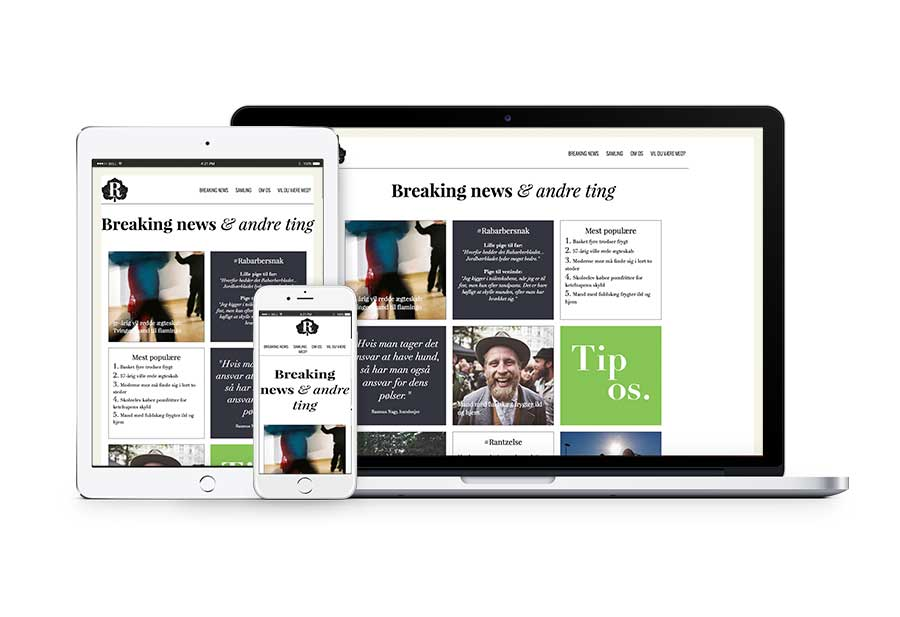
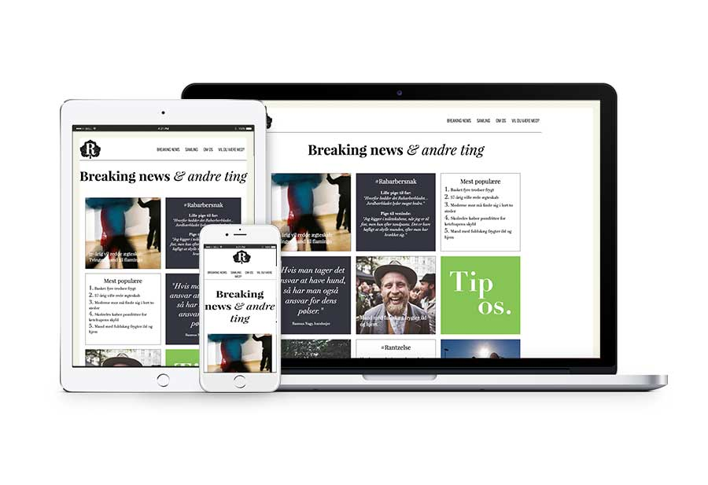

Rabarberbladet
A website that reflects a local feeling
Rabarberbladet is a local newspaper writing about breaking news and other stuff from the Nørrebro area in Copenhagen. Rabarberbladet wanted a website so more people could access the newspaper without holding the physical one.
In close collaboration with four fellow students, we designed a website for Rabarberbladet. It was essential to keep the newspaper's visual look and feeling, moreover the old and humorous genre that the editorial team has given the news paper.
During the design process we used several tools to ensure that the site would be usable and desirable for the target group. We held several meetings with the editorial team throughout the process to discuss the concept and design of the website.
The final website holds a breaking news site, where we desinged a card layout to show the latests articles. Moreover, we made an archive site for older articles, an about site, and a contact site.
 
